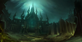

Icecrown Citadel rises — the Lich King's fortress at the heart of Northrend. Twelve bosses, winged progression, and the ultimate confrontation with Arthas define Wrath's culminating raid tier.
Lord Marrowgar, Deathbringer Saurfang, Festergut and Rotface, Valithria, Sindragosa, and finally Arthas. Each wing escalates story and difficulty. Heroic modes gate the strongest weapons in Wrath.

Buff stacks will eventually aid your raid, but execution on the Lich King remains the realm-defining moment.
Now go, face the darkness — and end this, once and for all.